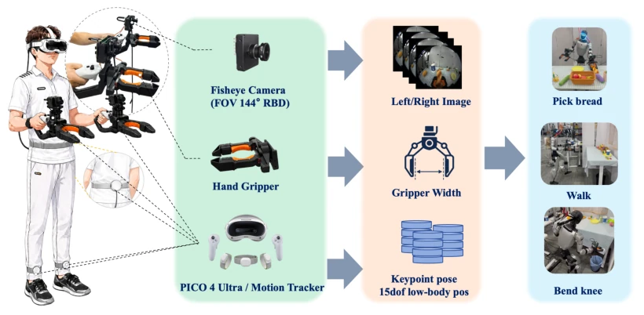
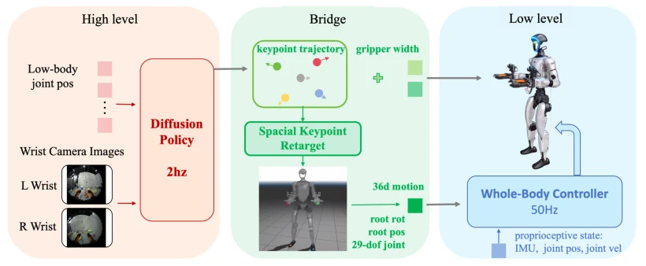
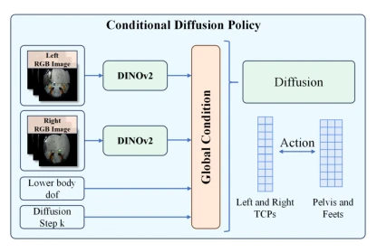
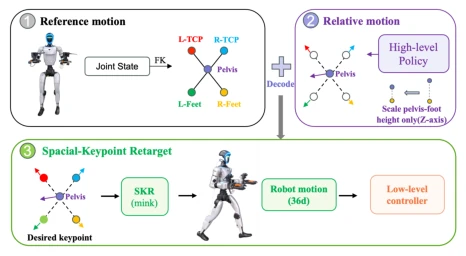
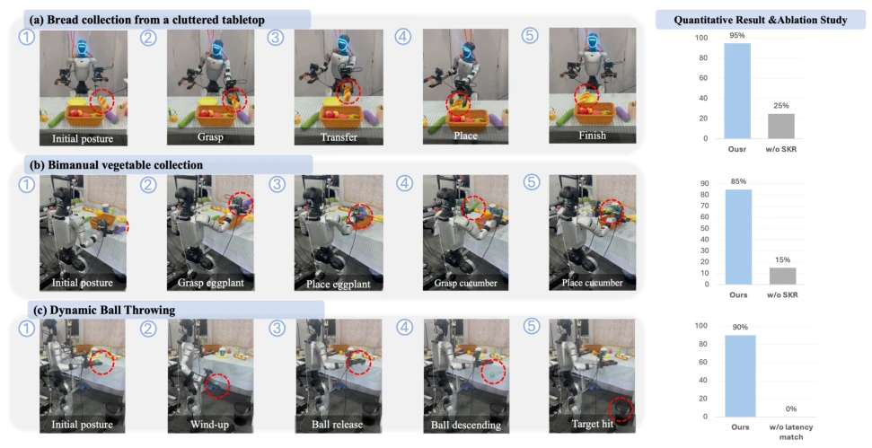
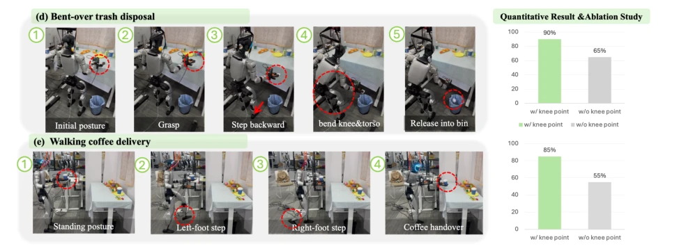

This paper attempts to transform humanoid robot data collection into "playing VR games" using VR game controllers and UMI grippers, which sounds appealing, but in actual deployment, mapping human skeletons to robot joints is by no means easy. The authors did not learn actions directly end-to-end, but implemented an intermediate layer of sparse keypoints plus SKR redirection, effectively building a bridge for the "humanoid gap". Although much more efficient than traditional teleoperation [2], it relies on specific hardware (PICO) and complex inverse kinematics redirection, raising doubts about generalization. However, successfully executing full-body coordination tasks on a real robot is indeed more substantial than pure simulation or pure teleoperation. As for drawbacks, SKR parameter tuning (such as leg scaling coefficients) may still need to be readjusted for each robot, so whether it counts as "general" remains questionable. In addition, how this method relying on vision and proprioception performs under lighting changes or sensor noise is not deeply explored in the text, appearing somewhat conservative.
The core bottleneck in humanoid robot skill learning lies in the difficulty of acquiring high-quality demonstration data. Existing methods mostly rely on robot teleoperation [2][4], requiring expensive hardware, skilled operators, and safety supervision, resulting in low efficiency and difficulty in scaling. Although UMI [9] demonstrated the feasibility of robot-free operation on manipulators, when extended to full-body humanoid control, coordinating balance, gait, and morphological differences presents huge challenges. Although HuMI [17] attempted a UMI style, it has high hardware costs and tight coupling between redirection and controllers. Therefore, there is an urgent need for a low-cost, portable, and robot-free data collection framework capable of generating deployable full-body policies to solve skill transfer problems caused by morphological differences. Especially for tasks involving gait and full-body coordination, existing teleoperation often fails to capture natural full-body intent.
HumanoidUMI adopts a three-layer hierarchical architecture. First, the data collection layer uses the PICO VR system to record human full-body keypoints (pelvis, feet, hand gripper TCP) and wrist-view images, cooperating with UMI-style grippers to collect manipulation data. Second, the high-level policy is based on Diffusion Policy, predicting future trajectories of sparse keypoints and gripper width, rather than directly outputting joint commands. The core innovation lies in the Spatial Keypoint Redirection (SKR) module, which maps human keypoints to robot native references through anisotropic scaling and constrained inverse kinematics, solving height and morphological differences. Specifically, SKR only scales the vertical pelvis-to-foot distance to compensate for height differences, retaining other spatial relationships. Finally, the low-level controller tracks these references and executes full-body actions. This design decouples task space planning from specific motion execution, improving policy interpretability and transferability. In addition, SKR supports 5-point or 7-point configurations, adding knee keypoints for lower-limb intensive tasks, enhancing constraint capabilities for lower-body posture, ensuring actions are feasible within the robot's kinematics, avoiding full-body coordination intent that is difficult to capture in traditional teleoperation.

Fig. 2. HumanoidUMI Data Acquisition System. The data acquisition platform consists of a PICO-based motion capture setup, including two foot- mounted trackers and one waist-mounted tracker, together with two instrumented grippers, each equipped with a fisheye camera. The system synchronously records multimodal observations, including wrist-view images from the fisheye cameras, human keypoint states obtained via the PICO SDK, and gripper aperture measurements derived from motor encoder readings. These heterogeneous data streams are jointly used to train a high-level policy, which is subsequently deployed for real-time control of robot motion.

Fig. 3. HumanoidUMI Hierarchical Visuomotor Control. HumanoidUMI formulates humanoid visuomotor control as a three-stage hierarchy. A diffusion-based high-level policy predicts task-space keypoint trajectories and gripper commands from wrist-view images and lower-body proprioception. The spatial keypoint retargeting bridge maps these commands into a 36-dimensional robot-native motion representation, including the root pose and joint configurations. A low-level whole-body controller then tracks the retargeted motion with proprioceptive feedback, enabling stable humanoid execution from robot-free demonstrations.

Fig. 4. Conditional diffusion policy architecture. Wrist-view RGB images are encoded by DINOv2 and fused with lower-body proprioception and the diffusion step as the global condition. The diffusion model predicts action trajectories for TCPs and body-support keypoints.

Fig. 5. Spatial Keypoint Retargeting (SKR). SKR bridges high-level keypoint prediction and low-level whole-body control by converting five task-space keypoints, including the pelvis, two TCPs, and two feet, into robot-native whole-body references. Unlike global motion rescaling, SKR preserves metric spatial relationships among the keypoints and only scales the vertical pelvis-to-foot distance to compensate for human–robot height differences. The resulting inverse-kinematics solution provides executable joint-level motion commands for the humanoid robot.

Fig. 6. Real-world evaluation and ablation analysis of HumanoidUMI on three humanoid manipulation tasks. (a) Cluttered tabletop pick-and-place: the robot grasps bread and places it onto a target plate. (b) Bimanual vegetable collection: the robot uses the right hand to place an eggplant and the left hand to place a cucumber. (c) Dynamic ball throwing: the robot performs a wind-up, releases the ball, and hits the target, requiring accurate latency matching. The left-side bar plots report success rates over 20 independent trials for the corresponding ablations: the first two tasks evaluate the effect of spatial keypoint retargeting (SKR), while the dynamic ball-throwing task evaluates latency matching.
Validated on the Unitree G1 robot with 5 real tasks, including grasping, dual-arm coordination, dynamic throwing, and full-body mobile manipulation. Compared to the teleoperation baseline TWIST2 [2], HumanoidUMI significantly improved data collection efficiency, for example, novice efficiency increased by 61 times in the "walking to deliver coffee" task. Ablation experiments show that removing SKR leads to a significant drop in success rate, proving redirection is crucial for morphological adaptation; removing latency matching affects dynamic task performance. Results confirm that robot-free demonstrations can be effectively converted into deployable full-body skills, with low dependence on operator skills. Experiments also demonstrated that in complex scenes (such as trash disposal under a table), the robot can coordinate leg bending and trunk movements, proving the effectiveness of full-body control.

Fig. 7. Real-world evaluation of the augmented seven-keypoint variant of HumanoidUMI on two humanoid whole-body manipulation tasks with a Unitree G1 robot. (a) Under-table waste disposal: the robot grasps a crumpled paper ball from the tabletop, steps backward, bends its knees and torso, reaches toward a waste bin underneath the table, and releases the object into the bin. (b) Walking coffee delivery: the robot walks forward with a natural gait, comes to a stable stop, and extends its arm to hand over the coffee. For these lower-body-intensive tasks, HumanoidUMI uses the augmented configuration with two additional knee keypoints. The left-side bar plots report success rates over 20 independent trials, comparing the augmented seven-keypoint variant with the default five-keypoint configurati